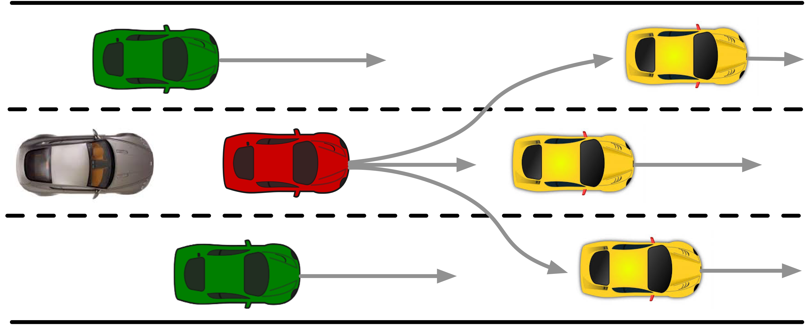
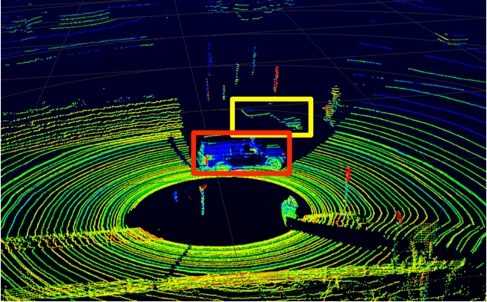

Research Projects
Interaction-aware Probabilistic Behavior Prediction via Adversarial Learning
|  | Abstract: In order for appropriate and high-quality decision making and motion planning of intelligent agent systems such as intelligent robotics and autonomous vehicles, accurate probabilistic predictions for surrounding interactive objects is a crucial prerequisite. Although many research studies have been devoted to make predictions on a single entity, it remains an open challenge to forecast future behaviors for multiple interactive agents simultaneously. In this work, we take advantage of the Generative Adversarial Network (GAN) due to its capability of distribution learning and propose a generic multi-agent probabilistic prediction and tracking framework which takes the interactions among multiple entities into account, in which all the entities are treated as a whole. However, since GAN is very hard to train, we make an empirical research and present the relationship between training stability, training performance and hyperparameter values with a numerical case study. The results imply that the proposed model can capture both the mean, variance and multi-modalities of groundtruth distribution. Moreover, we apply the proposed approach to a real-world vehicle tracking and behavior prediction task to demonstrate its effectiveness and accuracy. The results illustrate that the proposed model trained by adversarial learning can achieve a better prediction performance than other state-of-the-art models trained by traditional supervised learning which maximizes the data likelihood. The well-trained model can also be utilized as an implicit proposal distribution for particle filtered based Bayesian state estimation which can improve tracking accuracy. |
Hierarchical Framework for Probabilistic Situation Prediction
 |
Abstract: Accurate and robust recognition and prediction of traffic situation plays an important role in autonomous driving, which is a prerequisite for risk assessment and effective decision making. Although there exist a lot of works dealing with modeling driver behavior of a single object, it remains a challenge to make predictions for multiple highly interactive agents that react to each other simultaneously. In this project, we propose a generic probabilistic hierarchical recognition and prediction framework which employs a two-layer Hidden Markov Model (TLHMM) to obtain the distribution of potential situations and a learning-based dynamic scene evolution model to sample a group of future trajectories. Instead of predicting motions of a single entity, we propose to get the joint distribution by modeling multiple interactive agents as a whole system. Moreover, due to the decoupling property of the layered structure, our model is suitable for knowledge transfer from simulation to real world applications as well as among different traffic scenarios, which can reduce the computational efforts of training and the demand for a large data amount. A case study of highway ramp merging scenario is demonstrated to verify the effectiveness and accuracy of the proposed framework. |
Occluded Object Tracking based on Modified Mixture Particle Filter
|  | Abstract: Accurate and robust tracking of surrounding road participants plays an important role in autonomous driving. However, there is usually no prior knowledge of the number of tracking targets due to object emergence, object disappearance and false alarms. To overcome this challenge, in this project we propose a generic vehicle tracking framework based on modified mixture particle filter, which can make the number of tracking targets adaptive to real-time observations and track all the vehicles within sensor range simultaneously in a uniform architecture without explicit data association. Each object corresponds to a mixture component whose distribution is non-parametric and approximated by particle hypotheses. Most tracking approaches employ vehicle kinematic models as the prediction model. However, it is hard for these models to make proper predictions when sensor measurements are lost or become low quality due to partial or complete occlusions. Moreover, these models are incapable of forecasting sudden maneuvers. To address these problems, we propose to incorporate learning-based behavioral models instead of pure vehicle kinematic models to realize prediction in the prior update of recursive Bayesian state estimation. Two typical driving scenarios including lane keeping and lane change are demonstrated to verify the effectiveness and accuracy of the proposed framework as well as the advantages of employing learning-based models. |